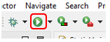
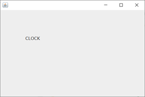
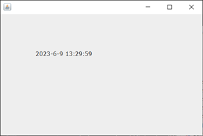
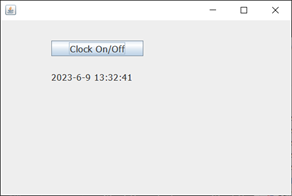

Lab1: Java Development Environment
In this first lab, we will:
- install Eclipse Java IDE (Integrated Development Environment);
- add WindowBuilder to create a window application in 3 steps; and
- add SQLite JDBC drive to create a database application in 3 steps.
Throughtthe Lab1 exercises, you will learn:
- how to program in Java with Eclipse Java IDE;
- how to create a window application with WindowBuilder;
- how to create a database application with SQLite; and
- how to create a multithread application.
Eclipse Java IDE
- Go to
Eclipse Installer.
- Download an appropriate version (Windows/macOS/Linux) of
"Eclipse IDE 2023-12" (or the latest version).
- Run the downloaded installer.
- Choose "Eclipse IDE for Java Developers".
- Choose the installation folder and finish the installation of Eclipse IDE.
Hello World
- Run Eclipse IDE, choose an appropriate workspace directory, and launch.
- Kill the Welcome window by clicking X.
- File → New → Java Project.
- Set Project Name to "HelloWorld",
uncheck "Create module-info.java file", and click Finish.
- File → New → Class;
set Name to "HelloWorld" and click on Finish.
- Add the following main method in the HelloWorld class definition.
public static void main(String[] args) {
System.out.println("Hello, world!");
}
- Execute the program by clicking the white triangle in the green circleo
on the menu.

- Click on OK in the "Save and Launch" window.
- Check to see that "Hello, world!" is printed in Console.
- Note 1:
- System.out.println() prints a string in one line in Console.
- Note 2:
- Each Java program has to have one main method defined by
public static void main(String[] args) { ... } in a class.
This is the main method to be executed first when the Java program
gets executed.
- Note 3:
- No specific requirements on the name of the class with the main method.
Window Application Step 1
- Create a new Javap project "WinApp1".
- Help → Eclipse Marketplace.
- Find "WindowBuilder".
- Install "WindowBuilder Current" and click on Confirm.
- Check "I accet the terms ..." and click on Finish.
- Wait for installing software;
the progress is shown in the bottom right corner.
- Click on Restart Now and wait for the restart of Eclipse IDE.
- Right-click on "WinApp1" → New → Other.
- WindowBuilder → Swing Designer → Application Window.
- Click on Next.
- Set Name to "WinApp1" and click on Finish.
- Click on Design below the code pane.
- Adjust the panes to clearly see the blank window layout.
- Minimize Package Explorer on the left side by clicking
on the white rectangle next to the Package Explorer.

- Get Package Explorer back by clicking on the following symbol.

- Right-click on the black window layout → Set layout →
Absolute layout.
- Click on JLabel in Parette/Components, move the cursor to the blank
window layout, and enlarge the JLabel box.
- Press ESC to remove the JLabel message box if necessary.
- Change Variable name to "lblClock" in Properties.
- Change the font size to your favorite size (like 14) in Properties.
- Go back to Source by clicking on Source below the Design pane.
- lblClock is declared locally at the end of
initialize().
- Add the declaration private JLabel lblClock;
after private JFrame frame; at the top of the
WinApp1 class definition.
private JFrame frame;
private JLabel lblClock;
- Remove JLabel from
JLabel lblClock = new JLabel("New label");
at the end of initialize().
lblClock = new JLabel("New Label");
lblClock.setFont(new Font("Tahoma", Font.PLAIN, 14));
- After initialize(); in the class constructor WinApp1(),
add the following method call to change the label name.
initialize();
lblClock.setText("CLOCK");
- Run the program by clicking on the white triangle in the green circle.
- Check to see that "CLOCK" appears in the popped-up window.

- Close the window by clicking on X at the top-right corner of the window.
- Note 1:
- When you reopen the source file created by Application Window,
you may not see the Design tab under the source window.
In that case, right-click on the file and choose Open With →
WindowBuilder Editor.
- Note 2:
- If the source file created by "Application Window" is opened
with the regular Java editor, you don't see the Design tab.
Window Application Step 2
- Create a new Java project "WinApp2".
- Copy WinApp1/src/WinApp1.java and paste it in WinApp2/src.
- Right-click on WinApp2/src/WinApp1.java.
- Refactor → Rename; change name to WinApp2, click on Finish, and
click on Finish again.
- Double-click on WinApp2/src/WinApp2.java.
- Run the program to see "CLOCK" in the popped-up window and close it.
- Go to WinApp2.java.
- Add the following tow import statements after the last import statement
at the beginning of the source file.
import java.util.Calendar;
import java.util.GregorianCalender;
- In the class constructor WinApp2();, comment out
lblClock.setText("CLOCK"); by adding //.
- Add clock(); after that.
initialize();
// lblClock.setText("CLOCK");
clock();
- After the constructor definition WinApp2(){},
add the following method.
public void clock() {
Calendar cal = new GregorianCalendar();
int year = cal.get(Calendar.YEAR);
int month = cal.get(Calendar.MONTH) + 1;
int day = cal.get(Calendar.DAY_OF_MONTH);
int hour = cal.get(Calendar.HOUR_OF_DAY);
int minute = cal.get(Calendar.MINUTE);
int second = cal.get(Calendar.SECOND);
lblClock.setText(year + "-" + month + "-" + day + " " + hour + ":" + minute + ":" + second);
}
- Run the program.
- Check to see that the current time is correctly printed in the popped-up
window.

- Enlarge the clock (JLabel) box if necessary.
Window Application Step 3
- Create a new project "WinApp3".
- Copy WinApp2/src/WinApp2.java and paste it at WinApp3/src.
- Rename the file to WinApp3 using Refactor → Rename.
- Go to Design.
- Add JButton from Parette/Components to the window.
- Change Variable to "btnClock" and text to "Clock On".
- Go back to Source.
- Add the following statement at the beginning of the WinApp class definition.
private boolean clockOn;
- After WinApp3(), add the following ClockThread
class definition.
public class ClockThread extends Thread {
public void run() {
while (true) {
clock();
try {
sleep(1000); // 1000 ms
if (!clockOn) break;
}
catch (Exception e) {
System.out.println(“<<< ” + e.getMessage());
break;
}
}
}
}
- Go to Design.
- Double-click on btnClock.
- Add the following statements in the body of actionPerformed(ActionEvent e).
if (clockOn) {
btnClock.setText(&\ldquo;Clock On”);
clockOn = false;
}
else {
btnClock.setText(“Clock Off”);
clockOn = true;
ClockThread ct = new ClockThread();
ct.start();
}
- Run the program.
- Check that the click on "Clock On" turns the clock on and the click on "Clock Off" turns the clock off.

- Note 1:
- The ClockThread class is a thread class that inherits from
Thread.
- Note 2:
- The run() method of the ClockThread class is executed
when start() of the class instance is called.
Database Application Step 1
Download sqlite-jdbc-3.44.1.0.jar (or the latest) from
github sqlite-jdbc site.
Download slf4j-api-2.0.9.jar from
slf4j-api/2.0.9
and slf4j-simple-2.0.9.jar from
slf4j-simple/2.0.9.
Database Application Step 2
Database Application Step 3